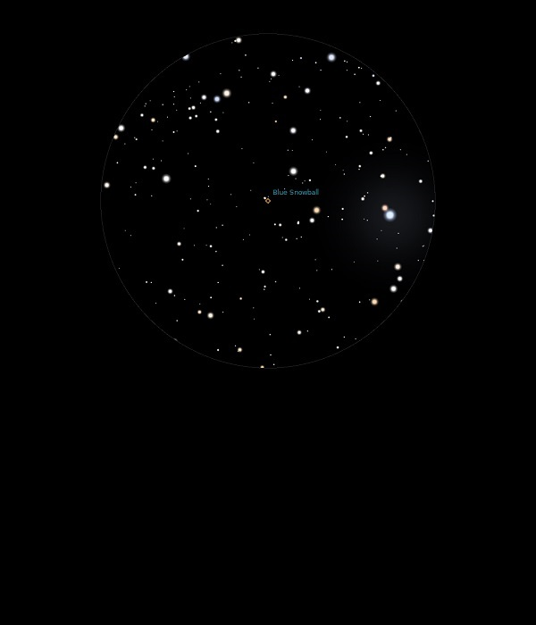

NGC 7662
Planetary
Nebula in Andromeda
NGC 7662
Mag 8.6
The Blue Snowball Nebula or Snowball Nebula, Caldwell 22
30/09/13
A bright fuzzy ball, quite distinctly round
Makes up a nice triangle in 12mm with two stars of similar
magnitude
08/12/14
A small but neat disc with fuzzy edges in 12mm and a definite
blue colour to the disc
No sign of the central star or inner hole, actually with very
careful focusing the ring appears in moments of good seeing